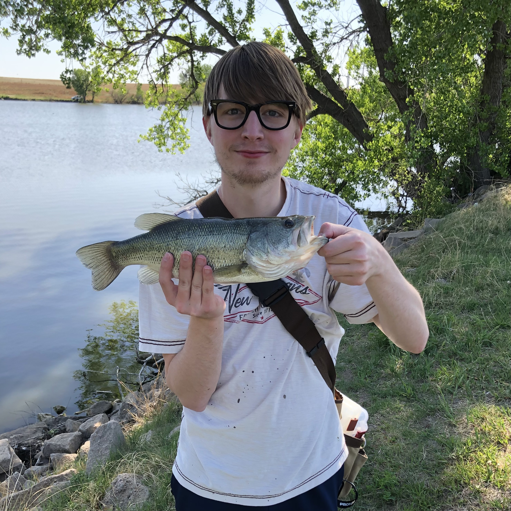
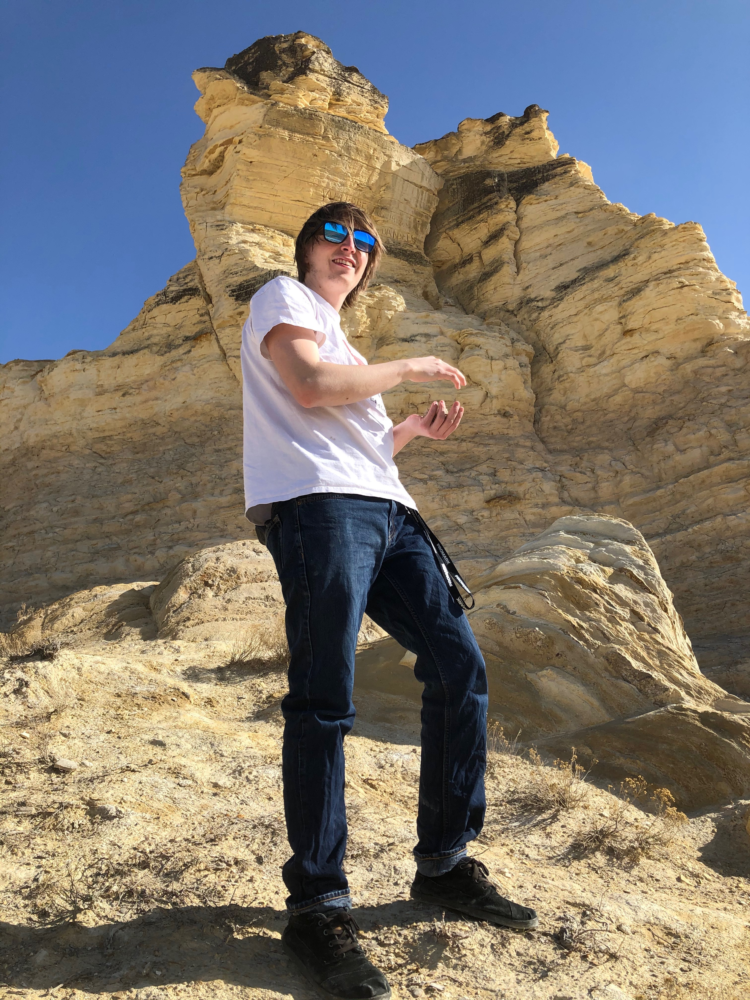

About Me
Hi there! My name is Greyson Webb. I'm in the process of learning web development, and this website is my first real project. I made this website to have a place to display all of my interests, projects, my thoughts, and my music and art while also learning more about coding. In the future, I want to make my own web game, so this website serves as a stepping stone towards that goal as well.
My Interests
My main interests (in no particular order) are:
- music
- art
- coding
- video games
- exploring nature
I tend to float around between these interests and spend time doing all of them, and this website is the place where I can share them. The “Projects” page contains links to web development projects that I've completed. The “Blog” page contains blog posts by myself with topics ranging from web development, music, and nature to random thoughts about life that I had and felt like sharing. The “Music & Art” page contains songs that I've made as well as art that I've made.
Music:
As for music, I've been doing music in one sense or another since I was a toddler. I started out with drums and guitar, and became proficient at drums when I was around 10 years old. Around that time, I began messing around with Garageband and Pro Tools on the music room computer. This allowed me to be much more creative than I was when I was only playing one instrument at a time because I was able to layer many different instruments together to make my own songs. Ever since then I've used different DAWs (Digital Audio Workstations) like Logic Pro X and for the past few years, Ableton Live to make my own songs using both real instruments and software instruments.
Art:
In terms of art, I've liked drawing and photography since I was a kid, and I've spent a fair amount of time doing both. Growing up, I didn't do visual art as much as music, but recently I've been doing them more equally. One bit of art I've done recently, for example, is the artwork of this website: the header and body backgrounds, and the boats up at the top. I made these using Clip Studio Paint and a Wacom drawing tablet.
Coding
In 2018, when I was 19 years old, I became interested in coding. I learned a little bit of Python, a little bit of HTML, and a little bit of CSS. After that, I didn't do very much coding until 2020, when I learned a bit of C, and then I took another break from coding until 2022, when I decided to start learning web development through The Odin Project. That's when I became inspired to make my own website, and once I had learned enough from the curriculum I started making this website.
Video Games:
I've been playing video games since I was a toddler, starting with PS1 games like Frogger and Pong, as well as computer games like Crayola Coloring games, a Tonka Truck game, and a Hot Wheels Game. When I was around 4 years old, we got an original XBOX. I played Star Wars: The Clone Wars a lot, and when I was a little older, Halo: Combat Evolved. Around the same time, I played PS2 games with my Grandpa Hubbard at his house when I would visit him. We took turns playing Cabela's hunting games and Crash Bandicoot: The Wrath of Cortex. Since then I've enjoyed playing games such as Super Mario 64 for Nintendo DS, Skyrim, Fallout 4, and Assassin's Creed Odyssey.
Exploring Nature:
One of the ways I've explored nature growing up has been fishing. My Granpda Hubbard took me fishing quite a few times over the years, and we always had fun even if we didn't catch anything. (But I'd still be sad if I didn't catch anything.) I still fish every few months when the weather is good. Other than fishing, I've also enjoyed hiking and swimming in Colorado, Northern California, and Oregon. There are so many awesome rivers and lakes in the Pacific Northwest to swim in. For me, being in nature in the Pacific Northwest has always been very rejuvenating and relaxing.
Me swimming in the Rogue River, Oregon.
Me at a lake in Kansas holding the first bass I ever caught.

Me and my partner exploring the Metolius River in Oregon.

Me working on sound equipment for my sister's wedding in Kansas City.
Me standing in front of the Monument Chalk Pyramids in Kansas.